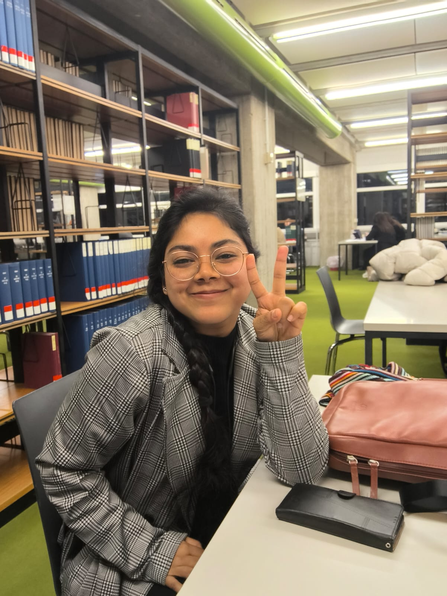

Hey there 👋 I'm an AI developer/researcher who spends far too much time thinking about how to make machines think responsibly and how they work.
My core interests orbit around Gen AI, and everything mentioned above, especially, teaching intelligent systems how not to break things (or ethics).
I work at the intersection of deep learning, natural language processing, and generative AI, building systems that are not only powerful but also interpretable, responsible, and aligned with human intent.
Beyond research, I learn and write about the quirks and paradoxes of AI, from alignment puzzles to the evolving behavior of generative models.
This portfolio is my living lab notebook - a space where theory meets code, and curiosity occasionally breaks into production.
🌐 Connect with me
✨ Step into my world
📩 Subscribe to my Newsletter
Follow my blog on Hashnode to get new articles as they come out.
Follow on Hashnode